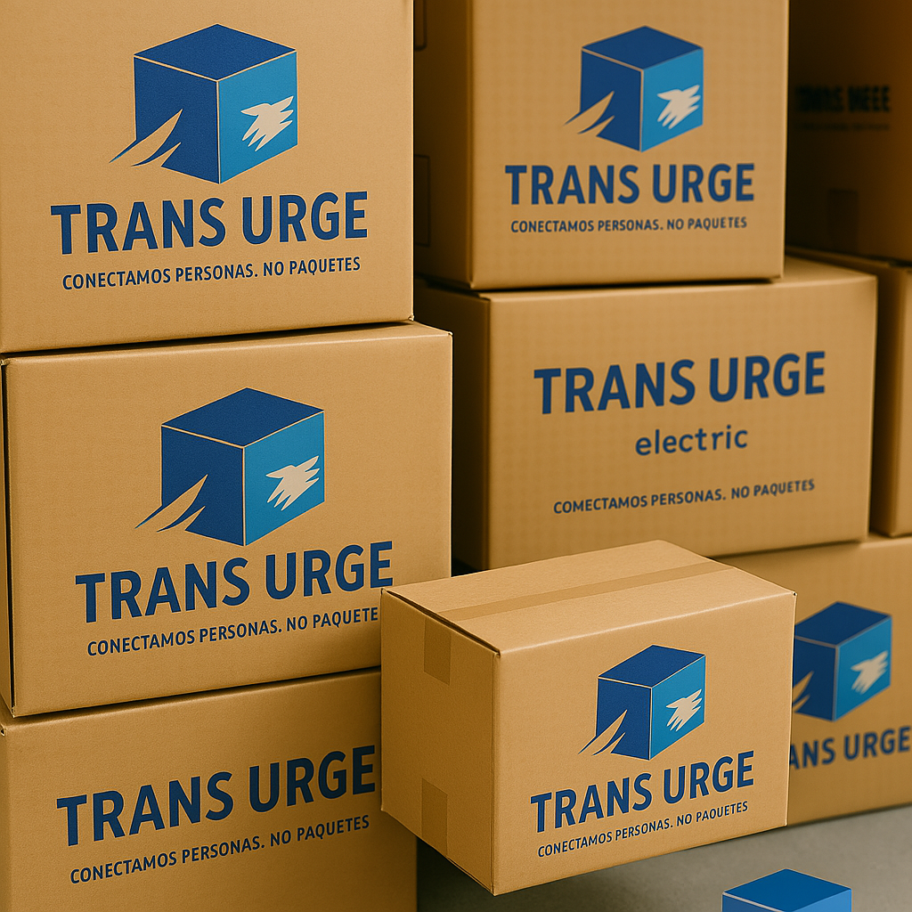
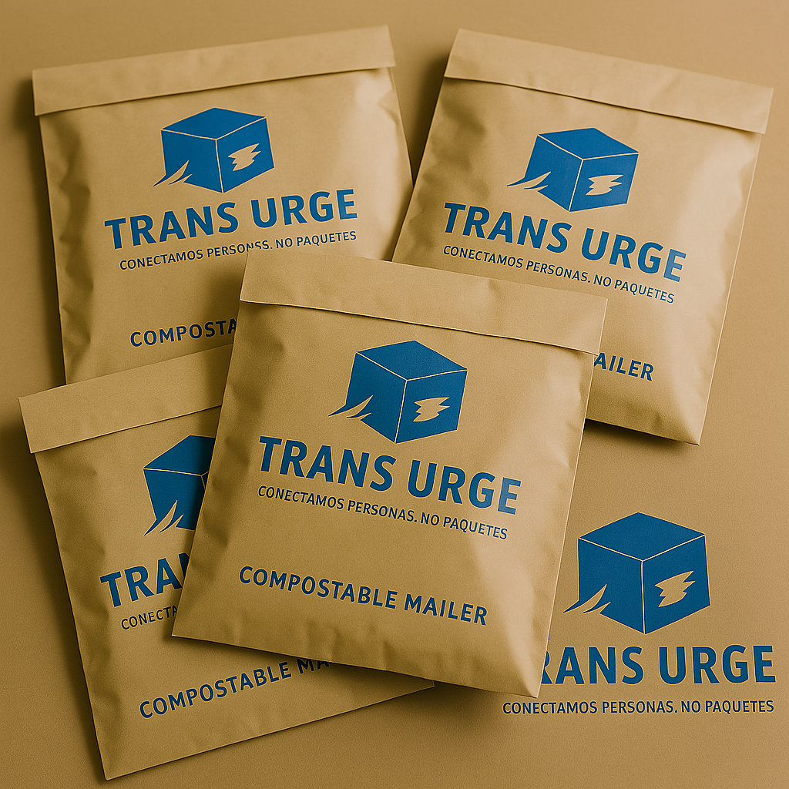
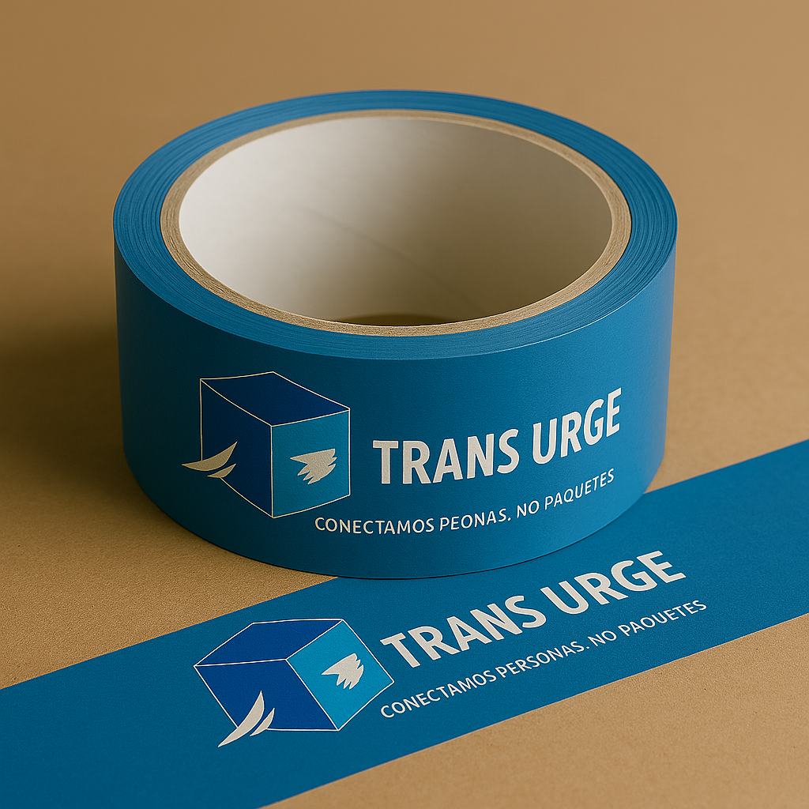
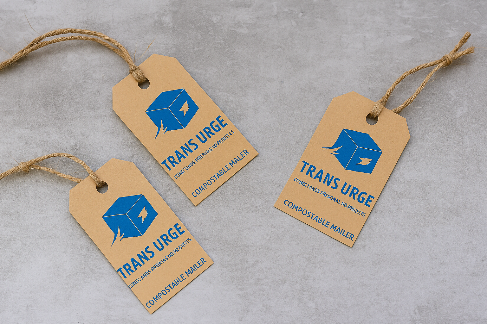

¿Qué es un Ecological Program?
Un programa ecológico es un conjunto de acciones planificadas y organizadas que tienen como objetivo proteger el medio ambiente, reducir el impacto ambiental de una actividad o sector, y promover la sostenibilidad.
🌿 Características principales
🌎 Reducción de emisiones
Disminuir los gases contaminantes mediante tecnologías limpias y procesos eficientes.
♻️ Reciclaje
Separar y reutilizar materiales para transformar residuos en nuevos recursos.
💡 Ahorro de energía
Implementar energías renovables y prácticas de bajo consumo en las operaciones.
📦 Embalaje Sostenible

Cajas de cartón reciclado
Material reciclado o reciclable que protege el producto y al planeta.

Sobres compostables
Fabricados con almidón de maíz o papel reciclado, biodegradables naturalmente.

Cinta adhesiva ecológica
Hecha de papel kraft con adhesivo natural, se degrada sin dañar el entorno.

Etiquetas y tintas sostenibles
Etiquetas de papel reciclado y tintas vegetales o a base de agua.